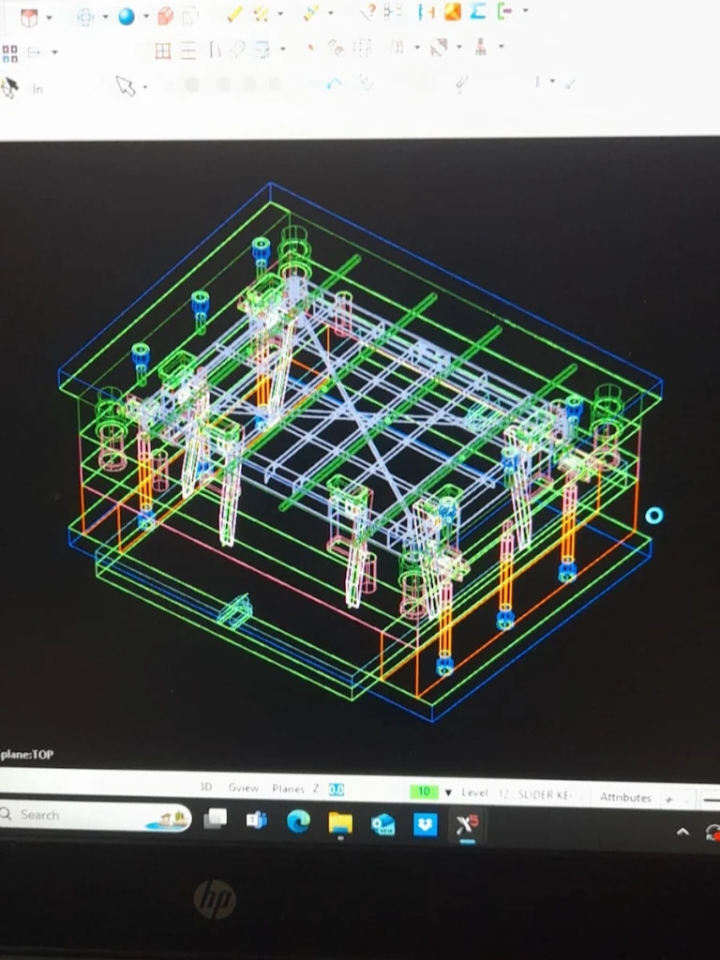
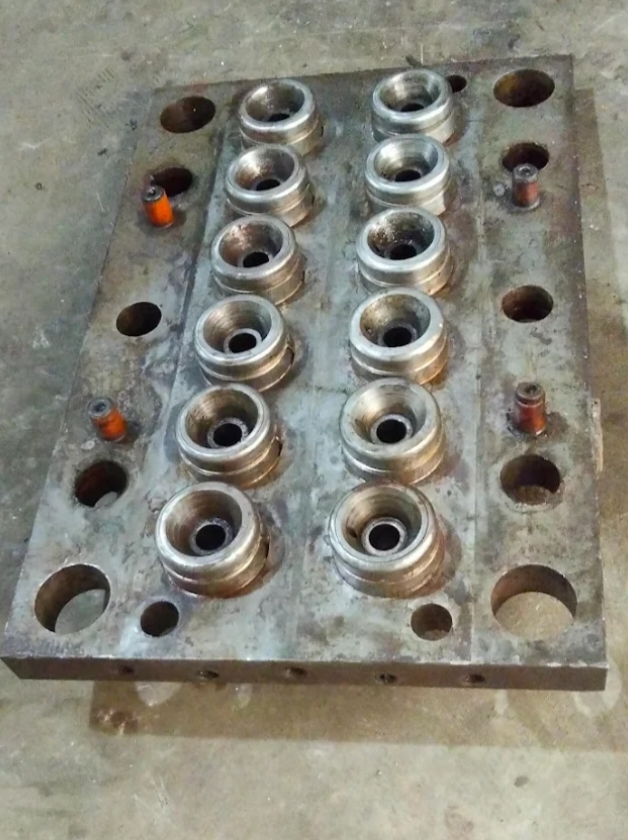
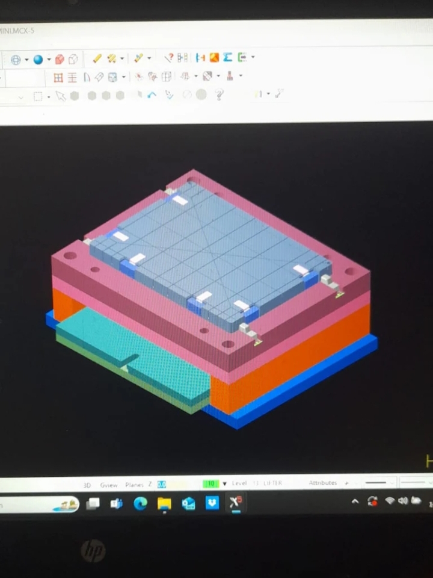
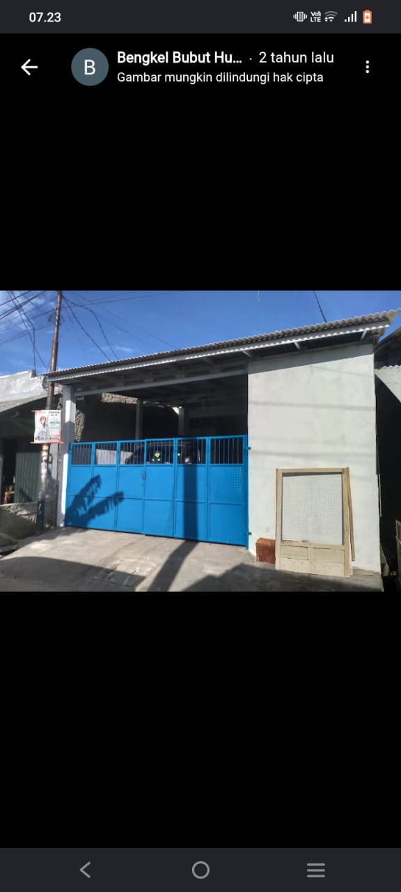

Part Mesin Injection
Pengerjaan dan perbaikan komponen mesin injection molding sesuai kebutuhan pekerjaan.
Detail layananCV Hunggul Teknik Workshop melayani perbaikan mesin injection molding, overhaul, toggle repair, screw repair, fabrikasi komponen, serta pengerjaan pisau industri dengan fokus pada ketelitian dan kebutuhan setiap pekerjaan.

Kami menangani berbagai kebutuhan perbaikan dan pembuatan komponen teknik, mulai dari mesin injection molding, pengerjaan part, hingga berbagai jenis pisau industri.
Setiap pekerjaan dimulai dengan memahami kebutuhan pelanggan agar proses pengerjaan dapat disesuaikan dengan kondisi komponen dan kebutuhan operasional.
Menyesuaikan pekerjaan dengan kebutuhan teknis pelanggan.
Perbaikan, fabrikasi, dan pengerjaan komponen industri.
Mulai dari perbaikan komponen mesin hingga pembuatan part dan pengerjaan pisau industri.
Pengerjaan dan perbaikan komponen mesin injection molding sesuai kebutuhan pekerjaan.
Detail layananPemeriksaan dan perbaikan komponen untuk mendukung kebutuhan perawatan mesin.
Detail layananPengerjaan perbaikan pada bagian toggle dan screw mesin injection molding.
Detail layananPembuatan komponen teknik berdasarkan kebutuhan dan spesifikasi pekerjaan.
Detail layananPembuatan dan pengasahan pisau crusher untuk kebutuhan operasional industri.
Detail layananPengerjaan pisau shearing, beading, dan kebutuhan komponen industri terkait.
Detail layananHubungi workshop untuk mendiskusikan kebutuhan teknis, kondisi komponen, dan ruang lingkup pekerjaan.
Sampaikan kebutuhan perbaikan atau pembuatan komponen.
Diskusikan kondisi komponen dan kebutuhan teknis pekerjaan.
Konfirmasikan ruang lingkup, estimasi biaya, dan waktu pengerjaan.
Pekerjaan dilanjutkan sesuai kesepakatan dengan pelanggan.
Jelajahi dokumentasi foto dan video terkait aktivitas serta pekerjaan workshop.



Hubungi CV Hunggul Teknik Workshop untuk membicarakan kebutuhan perbaikan mesin, fabrikasi part, atau pisau industri.